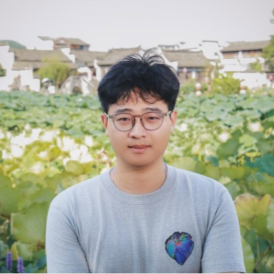

Zijie Cheng
Medical AI researcher, UCL Hawkes Institute
I work on continual learning for medical foundation models.
About
I am a PhD student in Computer Science at University College London and a medical AI researcher at the UCL Hawkes Institute.
My PhD is on continual learning for medical foundation models: when a model adapts to a new domain, what should it retain and what should it forget? I work on retinal images and brain scans, supervised by Siddharth Swaroop and Daniel Alexander.
Education
-
2026 – 2030
PhD, Computer Science
University College London
-
2023 – 2024
MSc, Artificial Intelligence and Medical Imaging
University College London · Merit
-
2021 – 2023
BEng, Electrical and Electronics Engineering
City St George’s, University of London · First class
Experience
-
Oct 2026 – now
Postgraduate Teaching Assistant
University College London
-
Dec 2024 – now
Graduate Research Assistant
University College London · Part-time
Publications
-
2025
Understanding the robustness of vision-language models to medical image artefacts
npj Digital Medicine 8, 727
-
2025
Enhancing contrastive learning for retinal imaging via adjusted augmentation scales
Medical Imaging with Deep Learning (MIDL), PMLR 301, 214–225
The full list is on Google Scholar.